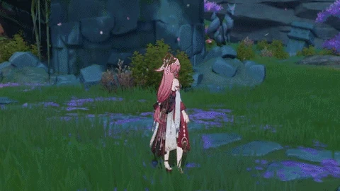
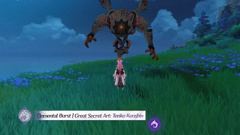

Yae Miko is one of many playable characters in Genshin Impact. She is known as Guuji Yae, the head of the Grand Narukami Shrine.
Yae Miko spawns Sesshou Sakura when using her skill. Sesshou Sakuras are totems that strike nearby enemies.


When ulting, Yae Miko summons a lightning strike. Every Sesshou Sakura that is spawned will turn to additional bolts striking enemies.